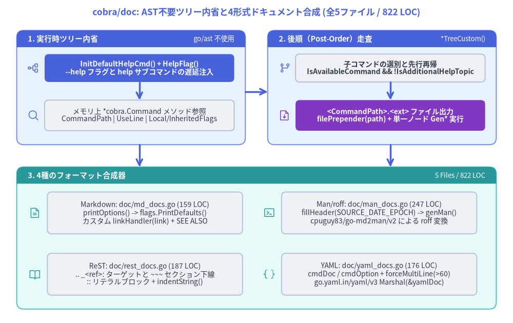
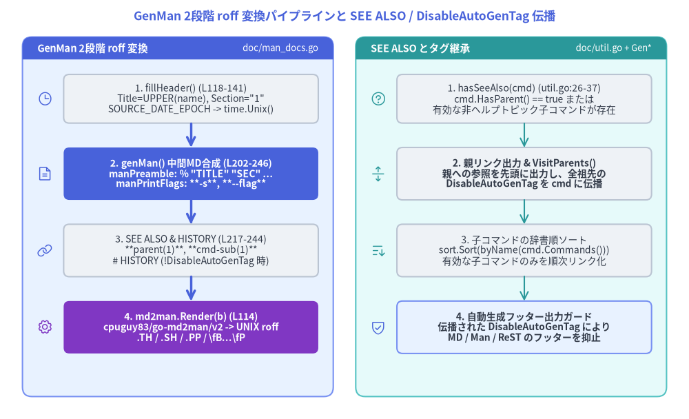

cobra/doc における AST 不要の再帰ドキュメント合成エンジン
ルートパッケージ github.com/spf13/cobra が実行時の CLI フラグ解析、ライフサイクル実行、および動的シェル補完を担うのに対し、オフラインのリファレンスドキュメント生成機能はサブパッケージ github.com/spf13/cobra/doc（非テスト Go ファイル 5 個、計 822 LOC）に完全に分離されています。cobra/doc は go/ast や go/parser で .go ソースファイルを静的解析するのではなく、メモリ上に構築された実行時の *cobra.Command ツリーを直接内省（Introspection）し、Markdown (doc/md_docs.go)、UNIX Man ページ / roff (doc/man_docs.go)、reStructuredText (doc/rest_docs.go)、YAML (doc/yaml_docs.go) の4形式のリファレンスを一括合成します。

Source Code
from drawlib.canvas import save, setup
from drawlib.icons import phosphor
from drawlib.lines import line
from drawlib.shapes import rectangle
from drawlib.smartarts import Panel
from drawlib.styles import Styles
from drawlib.text import text
setup(width=184, height=116)
text(
(92, 111.5),
"cobra/doc: AST不要ツリー内省と4形式ドキュメント合成 (全5ファイル / 822 LOC)",
style=Styles.PrimaryBold.patch(text_size=12.5),
)
# Top-Left Panel: Stage 1 - Live Tree Introspection
Panel(
"1. 実行時ツリー内省",
"go/ast 不使用",
style=Styles.PrimaryNeutral,
header_style=Styles.PrimaryFlat,
text_style=Styles.WhiteBold.patch(text_size=10.5),
description_style=Styles.White.patch(text_size=9.5),
header_height=6.0,
).draw((6, 64), width=82, height=41)
phosphor.tree_structure((12, 91.5), width=4.4, style=Styles.Primary)
rectangle(
(50, 91.5),
width=68,
height=10,
style=Styles.PrimaryFlat.patch(shape_r=1.5),
text="InitDefaultHelpCmd() + HelpFlag()\n--help フラグと help サブコマンドの遅延注入",
text_style=Styles.WhiteBold.patch(text_size=10.0),
)
phosphor.magnifying_glass((12, 74.5), width=4.4, style=Styles.Primary)
rectangle(
(50, 74.5),
width=68,
height=11,
style=Styles.Neutral.patch(shape_r=1.5),
text="メモリ上 *cobra.Command メソッド参照\nCommandPath | UseLine | Local/InheritedFlags",
text_style=Styles.Dark.patch(text_size=10.0),
)
line((50, 86.5), (50, 80.0), arrow_head="->", style=Styles.PrimaryBold)
# Top-Right Panel: Stage 2 - Post-Order Tree Walker
Panel(
"2. 後順（Post-Order）走査",
"*TreeCustom()",
style=Styles.PrimaryNeutral,
header_style=Styles.PrimaryFlat,
text_style=Styles.WhiteBold.patch(text_size=10.5),
description_style=Styles.White.patch(text_size=9.5),
header_height=6.0,
).draw((96, 64), width=82, height=41)
phosphor.git_branch((102, 91.5), width=4.4, style=Styles.Primary)
rectangle(
(140, 91.5),
width=68,
height=10,
style=Styles.Neutral.patch(shape_r=1.5),
text="子コマンドの選別と先行再帰\nIsAvailableCommand && !IsAdditionalHelpTopic",
text_style=Styles.DarkBold.patch(text_size=10.0),
)
phosphor.file_arrow_down((102, 74.5), width=4.4, style=Styles.Accent)
rectangle(
(140, 74.5),
width=68,
height=11,
style=Styles.AccentFlat.patch(shape_r=1.5),
text="<CommandPath>.<ext> ファイル出力\nfilePrepender(path) + 単一ノード Gen* 実行",
text_style=Styles.WhiteBold.patch(text_size=10.0),
)
line((140, 86.5), (140, 80.0), arrow_head="->", style=Styles.PrimaryBold)
# Horizontal link between Stage 1 and Stage 2
line((88, 83), (96, 83), arrow_head="->", style=Styles.PrimaryBold)
# Bottom Panel: Stage 3 - Four Format Backends
Panel(
"3. 4種のフォーマット合成器",
"5 Files / 822 LOC",
style=Styles.SecondaryNeutral,
header_style=Styles.SecondaryFlat,
text_style=Styles.WhiteBold.patch(text_size=10.5),
description_style=Styles.White.patch(text_size=9.5),
header_height=6.0,
).draw((6, 5), width=172, height=51)
phosphor.file_text((12.5, 39.5), width=4.4, style=Styles.Secondary)
rectangle(
(52, 39.5),
width=70,
height=15,
style=Styles.Neutral.patch(shape_r=1.5),
text="Markdown: doc/md_docs.go (159 LOC)\nprintOptions() -> flags.PrintDefaults()\nカスタム linkHandler(link) + SEE ALSO",
text_style=Styles.Dark.patch(text_size=10.0),
)
phosphor.terminal_window((96.5, 39.5), width=4.4, style=Styles.Secondary)
rectangle(
(136, 39.5),
width=70,
height=15,
style=Styles.Neutral.patch(shape_r=1.5),
text="Man/roff: doc/man_docs.go (247 LOC)\nfillHeader(SOURCE_DATE_EPOCH) -> genMan()\ncpuguy83/go-md2man/v2 による roff 変換",
text_style=Styles.Dark.patch(text_size=10.0),
)
phosphor.book_open((12.5, 17.5), width=4.4, style=Styles.Secondary)
rectangle(
(52, 17.5),
width=70,
height=15,
style=Styles.Neutral.patch(shape_r=1.5),
text="ReST: doc/rest_docs.go (187 LOC)\n.. _<ref>: ターゲットと ~~~ セクション下線\n:: リテラルブロック + indentString()",
text_style=Styles.Dark.patch(text_size=10.0),
)
phosphor.brackets_curly((96.5, 17.5), width=4.4, style=Styles.Secondary)
rectangle(
(136, 17.5),
width=70,
height=15,
style=Styles.Neutral.patch(shape_r=1.5),
text="YAML: doc/yaml_docs.go (176 LOC)\ncmdDoc / cmdOption + forceMultiLine(>60)\ngo.yaml.in/yaml/v3 Marshal(&yamlDoc)",
text_style=Styles.Dark.patch(text_size=10.0),
)
# Vertical arrows from Top Panels to Bottom Panel
line((50, 64), (50, 56), arrow_head="->", style=Styles.PrimaryBold)
line((140, 64), (140, 56), arrow_head="->", style=Styles.PrimaryBold)
save()
1. なぜ cobra/doc は「AST 不要（AST-Free）」なのか
一般的な Go 製ドキュメント生成ツールの多くは、go/token・go/parser・go/ast を用いて .go ソースファイルを構文解析し、構造体リテラルやコメントを抽出します。しかし Cobra のような CLI フレームワークでは、init() 関数やファクトリ関数、動的コンフィギュレーションによってコマンド階層やフラグのデフォルト値・説明文が実行時に組み立てられるため、静的な AST 解析では正確な CLI 仕様を復元できません。
そこで cobra/doc の4つの単一コマンド生成器 — GenMarkdownCustom (doc/md_docs.go:57–117)、GenMan (doc/man_docs.go:105–116)、GenReSTCustom (doc/rest_docs.go:62–130)、GenYamlCustom (doc/yaml_docs.go:93–147) — は、メモリ上に構築済みの *cobra.Command オブジェクトグラフを直接内省します。
1.1 生成前の遅延初期化（InitDefaultHelpCmd と InitDefaultHelpFlag）
通常の CLI 実行時には、Command.ExecuteC() (command.go:1109–1111) がコマンドディスパッチの直前に組み込みの help [command] サブコマンドと --help (-h) フラグを遅延注入します。一方、オフラインのドキュメント生成ツールでは Execute() を呼ばずにルート *cobra.Command を直接 doc.Gen* に渡すのが一般的です。そのため、4つの単一コマンド生成器はいずれも冒頭で以下の2つの初期化メソッドを呼び出します。
// 以下の全生成器の冒頭で実行:
// - GenMarkdownCustom (doc/md_docs.go:58-59)
// - genMan (doc/man_docs.go:203-204)
// - GenReSTCustom (doc/rest_docs.go:63-64)
// - GenYamlCustom (doc/yaml_docs.go:94-95)
cmd.InitDefaultHelpCmd()
cmd.InitDefaultHelpFlag()
command.go 内の実装を追跡すると、この2行がドキュメント品質に不可欠な3つの副作用をもたらしていることが分かります。
cmd.InitDefaultHelpCmd()(command.go:1263–1318):if !c.HasSubCommands() { return }(L1264–1266) を判定し、サブコマンドを持たない葉コマンドにはhelpを追加しません。- サブコマンドが存在し
c.helpCommand == nilの場合、デフォルトのhelp [command]コマンドを生成してc.AddCommand(c.helpCommand)(L1316) で登録します。 - これにより
IsAvailableCommand()(command.go:1612–1614) のc.Parent().helpCommand == c判定が機能し、自動生成されたhelpコマンドがSEE ALSOの相互リンクや個別ファイル（myapp_help.md等）として誤出力されるのを防ぎます。
cmd.InitDefaultHelpFlag()(command.go:1219–1232):- まず
c.mergePersistentFlags()(L1220) を呼び出し、親・祖先コマンドのPersistentFlags()をc.parentsPflagsおよびc.Flags()にマージします。 c.Flags().Lookup("help") == nilであれば-h, --help(help for <DisplayName>) を登録し、FlagSetByCobraAnnotationアノテーションを付与します (L1229–1230)。この結果、cmd.NonInheritedFlags()の出力に-h, --helpが自動的に含まれます。
- まず
InitDefaultVersionFlag()は意図的に呼ばれない:ExecuteC()(command.go:1111) とは異なり、cobra/docはcmd.InitDefaultVersionFlag()を呼び出しません。そのため、自動生成の--versionフラグは事前に初期化されていない限りドキュメントには出力されません。
1.2 実行時イントロスペクションで参照されるフィールド・メソッド
ヘルプ初期化後、各生成器は *cobra.Command の以下のフィールドとメソッドのみを参照してドキュメントを組み立てます。
| 参照されるメンバー | ソース位置 (command.go) |
cobra/doc における役割 |
|---|---|---|
cmd.CommandPath() |
L1465–1470 |
ルートの DisplayName() から c.Name() までをスペース区切りで再帰結合した完全パス。見出し、出力ファイル名、SEE ALSO ラベルに使用。 |
cmd.Short / cmd.Long |
L63–66 |
短い要約と詳細説明。GenMan (man_docs.go:144–147) と GenReSTCustom (rest_docs.go:70–73) は len(cmd.Long) == 0 のとき cmd.Short にフォールバックし、GenMarkdownCustom (md_docs.go:66–69) は ### Synopsis セクション自体を省略。 |
cmd.Runnable() |
L1596–1598 |
c.Run != nil || c.RunE != nil を返す。Markdown (md_docs.go:71)、ReST (rest_docs.go:84)、YAML (yaml_docs.go:103) で cmd.UseLine() 出力の有無を制御（manPreamble man_docs.go:154 は常時出力）。 |
cmd.UseLine() |
L1482–1497 |
c.parent.CommandPath() と c.Use を連結し、c.HasAvailableFlags() && !c.DisableFlagsInUseLine なら末尾に " [flags]" を付与。 |
cmd.Example |
L69 |
使用例テキスト。コードブロック（.md, .1）、字下げリテラルブロック（.rst）、または文字列フィールド（.yaml）として出力。 |
cmd.NonInheritedFlags() |
L1770–1772 |
c.LocalFlags() (L1718–1740) に委譲し、cmd 自身に定義されたローカル Flags() と PersistentFlags() を返す。 |
cmd.InheritedFlags() |
L1744–1766 |
c.mergePersistentFlags() 実行後、c.parentsPflags のうち c.LocalFlags() でシャドーイングされていない親継承フラグを c.iflags に格納して返す。 |
2. 後順（Post-Order）再帰ツリー走査 (*TreeCustom)
4つのフォーマットすべてに、ディレクトリ単位でコマンドツリー全体を書き出すラッパー関数（GenMarkdownTree、GenManTree、GenReSTTree、GenYamlTree）と、カスタマイズ可能な再帰走査関数が用意されています。
GenMarkdownTreeCustom(cmd, dir, filePrepender, linkHandler)(doc/md_docs.go:133–158)GenManTreeFromOpts(cmd, opts GenManTreeOptions)(doc/man_docs.go:48–80)GenReSTTreeCustom(cmd, dir, filePrepender, linkHandler)(doc/rest_docs.go:145–170)GenYamlTreeCustom(cmd, dir, filePrepender, linkHandler)(doc/yaml_docs.go:60–85)
2.1 ボトムアップの子コマンド選別と再帰ループ
4つの *Tree* 関数はすべて、同一の 後順（Post-Order / ボトムアップ）深さ優先探索 を実装しています。
// GenMarkdownTreeCustom (doc/md_docs.go:133-158)
func GenMarkdownTreeCustom(cmd *cobra.Command, dir string, filePrepender, linkHandler func(string) string) error {
for _, c := range cmd.Commands() {
if !c.IsAvailableCommand() || c.IsAdditionalHelpTopicCommand() {
continue
}
if err := GenMarkdownTreeCustom(c, dir, filePrepender, linkHandler); err != nil {
return err
}
}
basename := strings.ReplaceAll(cmd.CommandPath(), " ", "_") + markdownExtension
filename := filepath.Join(dir, basename)
f, err := os.Create(filename)
if err != nil {
return err
}
defer f.Close()
if _, err := io.WriteString(f, filePrepender(filename)); err != nil {
return err
}
if err := GenMarkdownCustom(cmd, f, linkHandler); err != nil {
return err
}
return nil
}
子コマンド c に再帰する前のフィルタ条件 !c.IsAvailableCommand() || c.IsAdditionalHelpTopicCommand() は以下の2段階で不要ノードを除外します。
c.IsAvailableCommand()(command.go:1607–1621):- 非推奨または隠しコマンド（
len(c.Deprecated) != 0 || c.Hidden、L1608–1610）を除外します。 - 自動生成された
helpサブコマンド（c.HasParent() && c.Parent().helpCommand == c、L1612–1614）を除外します。 - 実行可能であるか利用可能なサブコマンドを持つこと（
c.Runnable() || c.HasAvailableSubCommands()、L1616–1618）を要求します。
- 非推奨または隠しコマンド（
!c.IsAdditionalHelpTopicCommand()(command.go:1628–1641):Run関数を持たず、非推奨でも隠しでもなく、かつ実行可能な子孫コマンドを一切持たない純粋なヘルプトピック用コマンド（例:myapp help environment）を除外します。
2.2 出力ファイル名生成・filePrepender・headerCopy による分離
子孫コマンドのファイル出力がすべて完了した後、現在の cmd 自身のファイルを生成します。
| ツリー走査関数 | 区切り文字 | 拡張子 | フロントマター挿入 (filePrepender) / ヘッダ分離 |
|---|---|---|---|
GenMarkdownTreeCustom (md_docs.go:143–156) |
"_" |
".md" (markdownExtension) |
f に filePrepender(filename) を書き込んでから GenMarkdownCustom(cmd, f, linkHandler) を実行。 |
GenManTreeFromOpts (man_docs.go:61–79) |
"_"（GenManTree L42 経由時は "-"） |
"." + section（既定 "1"） |
headerCopy := *header (L78) で構造体を浅くコピーしてから GenMan(cmd, &headerCopy, f) を呼び出し、fillHeader による header.Title 書き換えが親や兄弟コマンドへ漏洩するのを防止（man_docs_test.go:181–183 の TestGenManTree で検証）。 |
GenReSTTreeCustom (rest_docs.go:155–168) |
"_" |
".rst" |
f に filePrepender(filename) を書き込んでから GenReSTCustom(cmd, f, linkHandler) を実行。 |
GenYamlTreeCustom (yaml_docs.go:70–83) |
"_" |
".yaml" |
f に filePrepender(filename) を書き込んでから GenYamlCustom(cmd, f, linkHandler) を実行。 |
2.3 コマンド名に - や _ を含む場合のファイル名衝突の制約
4つの *Tree 関数のドキュメントコメント（md_docs.go:121–124、man_docs.go:34–37、rest_docs.go:134–137、yaml_docs.go:49–52）には、階層パスを単一文字（_ または -）で平坦化することに起因する重要な制約が明記されています。
ルート
cmdの下にsubとsub-third（またはsub_third）という2つのサブコマンドがあり、さらにsubの下にthirdというサブコマンドが存在する場合、cmd sub thirdとcmd sub-thirdの双方が同一のファイル名（cmd-sub-third.1やcmd_sub_third.md）にマッピングされ、後順走査で後から処理されたノードがファイルを上書きします。
3. SEE ALSO 相互参照の合成と DisableAutoGenTag の伝播
doc/util.go (53 LOC) に定義された3つのヘルパーが、4バックエンド共通の相互参照と整形ロジックを担います。

Source Code
from drawlib.canvas import save, setup
from drawlib.icons import phosphor
from drawlib.lines import line
from drawlib.shapes import rectangle
from drawlib.smartarts import Panel
from drawlib.styles import Styles
from drawlib.text import text
setup(width=184, height=112)
text(
(92, 107.5),
"GenMan 2段階 roff 変換パイプラインと SEE ALSO / DisableAutoGenTag 伝播",
style=Styles.PrimaryBold.patch(text_size=12.5),
)
# Left Panel: GenMan 2-Stage Pipeline
Panel(
"GenMan 2段階 roff 変換",
"doc/man_docs.go",
style=Styles.PrimaryNeutral,
header_style=Styles.PrimaryFlat,
text_style=Styles.WhiteBold.patch(text_size=10.5),
description_style=Styles.White.patch(text_size=9.5),
header_height=6.0,
).draw((6, 6), width=83, height=96)
phosphor.clock((12, 85.5), width=4.4, style=Styles.Primary)
rectangle(
(51, 85.5),
width=68,
height=13,
style=Styles.Neutral.patch(shape_r=1.5),
text="1. fillHeader() (L118-141)\nTitle=UPPER(name), Section=\"1\"\nSOURCE_DATE_EPOCH -> time.Unix()",
text_style=Styles.Dark.patch(text_size=10.0),
)
line((51, 79.0), (51, 72.5), arrow_head="->", style=Styles.PrimaryBold)
phosphor.file_text((12, 65.5), width=4.4, style=Styles.Primary)
rectangle(
(51, 65.5),
width=68,
height=14,
style=Styles.PrimaryFlat.patch(shape_r=1.5),
text="2. genMan() 中間MD合成 (L202-246)\nmanPreamble: % \"TITLE\" \"SEC\" ...\nmanPrintFlags: **-s**, **--flag**",
text_style=Styles.WhiteBold.patch(text_size=10.0),
)
line((51, 58.5), (51, 52.0), arrow_head="->", style=Styles.PrimaryBold)
phosphor.link((12, 45.0), width=4.4, style=Styles.Primary)
rectangle(
(51, 45.0),
width=68,
height=14,
style=Styles.Neutral.patch(shape_r=1.5),
text="3. SEE ALSO & HISTORY (L217-244)\n**parent(1)**, **cmd-sub(1)**\n# HISTORY (!DisableAutoGenTag 時)",
text_style=Styles.Dark.patch(text_size=10.0),
)
line((51, 38.0), (51, 31.5), arrow_head="->", style=Styles.PrimaryBold)
phosphor.gear((12, 24.5), width=4.4, style=Styles.Accent)
rectangle(
(51, 24.5),
width=68,
height=14,
style=Styles.AccentFlat.patch(shape_r=1.5),
text="4. md2man.Render(b) (L114)\ncpuguy83/go-md2man/v2 -> UNIX roff\n.TH / .SH / .PP / \\fB...\\fP",
text_style=Styles.WhiteBold.patch(text_size=10.0),
)
# Right Panel: SEE ALSO & DisableAutoGenTag Propagation
Panel(
"SEE ALSO とタグ継承",
"doc/util.go + Gen*",
style=Styles.SecondaryNeutral,
header_style=Styles.SecondaryFlat,
text_style=Styles.WhiteBold.patch(text_size=10.5),
description_style=Styles.White.patch(text_size=9.5),
header_height=6.0,
).draw((95, 6), width=83, height=96)
phosphor.question((101, 85.5), width=4.4, style=Styles.Secondary)
rectangle(
(140, 85.5),
width=68,
height=13,
style=Styles.Neutral.patch(shape_r=1.5),
text="1. hasSeeAlso(cmd) (util.go:26-37)\ncmd.HasParent() == true または\n有効な非ヘルプトピック子コマンドが存在",
text_style=Styles.Dark.patch(text_size=10.0),
)
line((140, 79.0), (140, 72.5), arrow_head="->", style=Styles.Secondary)
phosphor.arrows_out_line_vertical((101, 65.5), width=4.4, style=Styles.Secondary)
rectangle(
(140, 65.5),
width=68,
height=14,
style=Styles.Neutral.patch(shape_r=1.5),
text="2. 親リンク出力 & VisitParents()\n親への参照を先頭に出力し、全祖先の\nDisableAutoGenTag を cmd に伝播",
text_style=Styles.DarkBold.patch(text_size=10.0),
)
line((140, 58.5), (140, 52.0), arrow_head="->", style=Styles.Secondary)
phosphor.sort_ascending((101, 45.0), width=4.4, style=Styles.Secondary)
rectangle(
(140, 45.0),
width=68,
height=14,
style=Styles.Neutral.patch(shape_r=1.5),
text="3. 子コマンドの辞書順ソート\nsort.Sort(byName(cmd.Commands()))\n有効な子コマンドのみを順次リンク化",
text_style=Styles.Dark.patch(text_size=10.0),
)
line((140, 38.0), (140, 31.5), arrow_head="->", style=Styles.Secondary)
phosphor.shield_check((101, 24.5), width=4.4, style=Styles.Primary)
rectangle(
(140, 24.5),
width=68,
height=14,
style=Styles.PrimaryNeutral.patch(shape_r=1.5),
text="4. 自動生成フッター出力ガード\n伝播された DisableAutoGenTag により\nMD / Man / ReST のフッターを抑止",
text_style=Styles.DarkBold.patch(text_size=10.0),
)
save()
3.1 hasSeeAlso(cmd) によるセクション出力判定 (doc/util.go:26–37)
各生成器は SEE ALSO セクションを出力する前に hasSeeAlso(cmd) を呼び出します。
// doc/util.go:26-37
func hasSeeAlso(cmd *cobra.Command) bool {
if cmd.HasParent() {
return true
}
for _, c := range cmd.Commands() {
if !c.IsAvailableCommand() || c.IsAdditionalHelpTopicCommand() {
continue
}
return true
}
return false
}
- すべてのサブコマンド（
cmd.HasParent() == true）は親コマンドへの参照を持つため無条件にtrueとなります。 - ルートコマンド（
cmd.HasParent() == false）は、c.IsAvailableCommand() && !c.IsAdditionalHelpTopicCommand()を満たす子コマンドが1つ以上存在する場合のみtrueを返します。サブコマンドを持たない単一コマンド CLI ではSEE ALSOセクション自体が省略されます。
3.2 親リンクの先頭出力と VisitParents による DisableAutoGenTag 伝播
hasSeeAlso(cmd) が true かつ cmd.HasParent() が成り立つ場合、生成器は最初に親コマンドへのリンクを出力し、直後に cmd.VisitParents (command.go:884–889) でルートまで遡って DisableAutoGenTag を伝播させます。
// 以下の3箇所で完全に同一の伝播ロジックを実行:
// - GenMarkdownCustom (doc/md_docs.go:91-95)
// - genMan (doc/man_docs.go:225-229)
// - GenReSTCustom (doc/rest_docs.go:105-109)
cmd.VisitParents(func(c *cobra.Command) {
if c.DisableAutoGenTag {
cmd.DisableAutoGenTag = c.DisableAutoGenTag
}
})
- なぜ
if cmd.HasParent()ブロック内にVisitParentsがあるのか: コマンドが祖先を持つのはcmd.HasParent()がtrueのときだけです（そしてこのときhasSeeAlso(cmd)も必ずtrueになります）。SEE ALSO生成中にcmd.DisableAutoGenTagを書き換えることで、利用者がルートコマンド1箇所にrootCmd.DisableAutoGenTag = trueを設定するだけで、Markdown (md_docs.go:112)・Man (man_docs.go:242)・ReST (rest_docs.go:125) の全子孫コマンドで"Auto generated by spf13/cobra..."フッターが自動的に抑止されます。 GenManにおけるfillHeaderとVisitParentsの実行順序の機微 (doc/man_docs.go:109vsL225):GenManではL109でfillHeader(header, cmd.CommandPath(), cmd.DisableAutoGenTag)を実行した後に、genMan(cmd, header)内のL225–229でcmd.VisitParentsが走ります。そのため、親のrootCmd.DisableAutoGenTag = trueのみを設定して子のsubCmd.DisableAutoGenTagがfalseのままGenMan(subCmd, ...)を呼ぶと、# HISTORYセクション（L242）は抑止される一方、fillHeader（L137）時点ではまだ伝播前のためheader.Sourceに"Auto generated by spf13/cobra"が入るという実装上の特徴があります。
3.3 byName による子コマンドの決定論的ソート (doc/util.go:48–52)
親リンクの出力後、各生成器は children := cmd.Commands() を取得し、sort.Sort(byName(children)) でスライスをソートします。
// doc/util.go:48-52
type byName []*cobra.Command
func (s byName) Len() int { return len(s) }
func (s byName) Swap(i, j int) { s[i], s[j] = s[j], s[i] }
func (s byName) Less(i, j int) bool { return s[i].Name() < s[j].Name() }
アプリケーション側で cobra.EnableCommandSorting = false を設定して実行時ヘルプの並び順を登録順に固定している場合でも、cobra/doc の SEE ALSO リスト（md_docs.go:99、man_docs.go:232、rest_docs.go:113、yaml_docs.go:127）は常に Name() の辞書順で決定論的に出力されます。
4. 4つのフォーマット別バックエンドの内部パイプライン
4.1 Markdown バックエンド (doc/md_docs.go, 159 LOC)
GenMarkdownCustom(cmd, w, linkHandler) (L57–117) は、メモリ上の *bytes.Buffer に Markdown を構築し、最後に buf.WriteTo(w) で書き出します。
- 見出し階層と Synopsis (
L64–78):## <CommandPath>\n\n<Short>\n\nを出力します。len(cmd.Long) > 0の場合のみ### Synopsis\n\n<Long>\n\nを出力します。cmd.Runnable()がtrueの場合のみ```\n<UseLine>\n```\n\nを出力します。len(cmd.Example) > 0の場合、### Examplesとコードブロックを出力します。
pflag.FlagSet.SetOutputリダイレクトを用いたprintOptions(L32–49):- フラグ一覧を自前でフォーマットするのではなく、
cmd.NonInheritedFlags()とcmd.InheritedFlags()の出力先をflags.SetOutput(buf)(L34,L42) で一時的にbufへ向け、### Optionsおよび### Options inherited from parent commandsのコードブロック内でflags.PrintDefaults()(L37,L45) を呼び出します。
- フラグ一覧を自前でフォーマットするのではなく、
linkHandlerによるリンク書き換え (L88–90,L106–108):SEE ALSOの各リンク先ファイル名strings.ReplaceAll(targetPath + ".md", " ", "_")をlinkHandler(link)に通すことで、Hugo や Docusaurus 等の静的サイトジェネレータ向けの URL 変換を後処理なしで実現します。
4.2 UNIX Man ページバックエンド (doc/man_docs.go, 247 LOC)
他の3バックエンドが最終フォーマットを直接バッファに書き出すのに対し、GenMan(cmd, header, w) (L105–116) は 2段階のコンパイルパイプライン を採用しています。
- ヘッダ補完と
SOURCE_DATE_EPOCHによる再現可能ビルド (fillHeader,L118–141):header.Titleが空ならstrings.ToUpper(strings.ReplaceAll(name, " ", "\\-"))、header.Sectionが空なら"1"を設定します。header.Date == nilの場合、環境変数os.Getenv("SOURCE_DATE_EPOCH")(L127–133) を検査します。値が設定されていればstrconv.ParseInt(epoch, 10, 64)で UNIX エポック秒としてパースし、time.Unix(unixEpoch, 0)を生成します。これにより Debian・RPM・Nix・Homebrew 等のパッケージビルドにおいて、ビルド時刻に依存しないビット単位の再現可能ビルド（Reproducible Builds）が保証されます。.THマクロ用にheader.date = header.Date.Format("Jan 2006")(L136) を、# HISTORYセクション用にheader.Date.Format("2-Jan-2006")(L243) を整形します。
- Pandoc /
go-md2man拡張 Markdown の中間合成 (genMan,L202–246):manPreamble(L143–157):cobra.WriteStringAndCheck(cobra.go:243–246) を用い、go-md2manが roff の.THマクロへ変換する5フィールドの Pandoc タイトル行% "TITLE" "SECTION" "DATE" "SOURCE" "MANUAL"(L149)、続いて# NAME(<dashedName> \- <Short>)、# SYNOPSIS(**<UseLine>**)、# DESCRIPTION(cmd.Long、空ならcmd.Short) を出力します。manPrintOptionsとmanPrintFlags(L159–200):pflag.PrintDefaults()のプレーンテキスト出力では roff の太字強調（\fB...\fP）が効かないため、manPrintFlagsがflags.VisitAllを直接走査します。- 非推奨・隠しフラグをスキップします（
if len(flag.Deprecated) > 0 || flag.Hidden { return }、L161）。 - 短縮フラグが有効かつ非推奨でない場合のみ
**-%s**, **--%s**を出力し、短縮フラグが非推奨（len(flag.ShorthandDeprecated) > 0）または未設定なら**--%s**のみを出力します（L165–169、man_docs_test.go:149–162のTestManPrintFlagsHidesShortDeprecatedで検証）。 len(flag.NoOptDefVal) > 0の場合はデフォルト値指定を[...]で囲み（L170–181）、flag.Value.Type() == "string"なら=%q（それ以外は=%s）でデフォルト値を出力したのち\n\t%s\n\nで説明文を字下げします。
- 非推奨・隠しフラグをスキップします（
- カンマ区切りの
SEE ALSO(L217–241):**parent(1)**, **cmd-child(1)**の形式でスライスseealsosに収集し、strings.Join(seealsos, ", ")で1行に連結します。
md2man.Renderによる roff コンパイル (L113–115):- 中間 Markdown バイト列
b := genMan(cmd, header)をmd2man.Render(b)(github.com/cpuguy83/go-md2man/v2/md2man) に渡し、内部のrussross/blackfriday/v2パーサー経由で UNIX troff/groff マクロ（.TH,.SH,.PP,\fB...\fP）へ変換してwに書き出します。
- 中間 Markdown バイト列
4.3 reStructuredText バックエンド (doc/rest_docs.go, 187 LOC)
GenReSTCustom(cmd, w, linkHandler) (L62–130) は Sphinx や Python docutils ツールチェーン向けの .rst ファイルを生成します。
- 参照ターゲットとセクション下線 (
L74–83):- 冒頭に内部クロスリファレンス用のラベル
.. _<ref>:\n\n（refはスペースを_に置換、L76）を出力し、タイトルnameの直下にstrings.Repeat("-", len(name))(L78)、各サブセクション（Synopsis,Examples,Options,SEE ALSO）の直下に~~~~~~~の下線を引きます。
- 冒頭に内部クロスリファレンス用のラベル
- リテラルブロック (
::) とindentString(L84–95,L173–186):- ReST では
::と空行に続く字下げブロックがリテラルコードブロックとして解釈されます。 - 単一行の
cmd.UseLine()(L85) には先頭2スペース" "を直接付与します。 - 複数行になり得る
cmd.Example(L91) には、kr/textから移植されたindentString(cmd.Example, " ")(L173–186) を適用します。indentStringはバイト単位で行頭フラグbol := trueを追跡し、bol && c != '\n'のときのみ" "を挿入するため、空行に不要な空白が混入しません。 printOptionsReST(L30–49) では、pflag.PrintDefaults()が元から全行の先頭にスペースを入れて出力する性質を利用し、::\n\nの直後にそのままflags.PrintDefaults()を流し込むことで ReST の字下げ要件を満たしています。
- ReST では
- 2引数
linkHandler(name, ref string) string(L52–54):- Markdown の1引数
linkHandlerとは異なり、ReST 版は表示名nameとアンカー名refの2引数を受け取ります。既定のdefaultLinkHandlerはfmt.Sprintf("`%s <%s.rst>`_", name, ref)を返します。
- Markdown の1引数
4.4 YAML バックエンド (doc/yaml_docs.go, 176 LOC)
GenYamlCustom(cmd, w, linkHandler) (L93–147) は、構造体 cmdDoc および cmdOption にメタデータを詰め、go.yaml.in/yaml/v3 で直列化します。
- 直列化スキーマ構造体 (
cmdDoc&cmdOption,L30–46):type cmdOption struct { Name string Shorthand string `yaml:",omitempty"` DefaultValue string `yaml:"default_value,omitempty"` Usage string `yaml:",omitempty"` } type cmdDoc struct { Name string Synopsis string `yaml:",omitempty"` Description string `yaml:",omitempty"` Usage string `yaml:",omitempty"` Options []cmdOption `yaml:",omitempty"` InheritedOptions []cmdOption `yaml:"inherited_options,omitempty"` Example string `yaml:",omitempty"` SeeAlso []string `yaml:"see_also,omitempty"` } forceMultiLineワークアラウンド (doc/util.go:41–46):func forceMultiLine(s string) string { if len(s) > 60 && !strings.Contains(s, "\n") { s += "\n" } return s }- 改行を含まない
60バイト超の長い文字列を YAML ライブラリがシリアライズする際の不自然な折り返しを防ぐため、末尾に\nを追加して複数行ブロックスカラー表現を強制します。yamlDoc.Synopsis(L100)、yamlDoc.Description(L101)、およびgenFlagResult(L149–175) 内のフィールドに適用されます。
- 改行を含まない
GenYamlCustomとgenFlagResult特有の実装詳細 (L111–175):HasFlags()と全件VisitAll走査: Markdown・Man・ReST がflags.HasAvailableFlags()で判定し隠しフラグや非推奨フラグを除外するのに対し、GenYamlCustomはflags.HasFlags()(L112,L116) を呼び、genFlagResultもflags.VisitAll(L152) でflag.Hiddenやflag.Deprecatedをフィルタせずに全フラグを出力します（ただし短縮フラグについてはL156のlen(flag.ShorthandDeprecated) == 0 && len(flag.Shorthand) > 0で非推奨短縮フラグを除外します）。- 未使用の
linkHandler引数とyaml.Marshal:GenYamlCustomはGenMarkdownCustomとのシグネチャ互換性のためにlinkHandler func(string) stringを受け取りますが、yamlDoc.SeeAlsoにはparent.CommandPath() + " - " + parent.Short(L124,L132) を直接格納し、最後にyaml.Marshal(&yamlDoc)(L137–141) で YAML バイト列へ変換してwに書き出します。
5. cobra/doc 4バックエンドのアーキテクチャ比較まとめ
| 比較項目 | Markdown (doc/md_docs.go) |
Man / roff (doc/man_docs.go) |
ReST (doc/rest_docs.go) |
YAML (doc/yaml_docs.go) |
|---|---|---|---|---|
| 非テスト LOC | 159 |
247 |
187 |
176（+ doc/util.go 53） |
| 単一ノード生成関数 | GenMarkdownCustom(cmd, w, linkHandler) |
GenMan(cmd, header, w) |
GenReSTCustom(cmd, w, linkHandler) |
GenYamlCustom(cmd, w, linkHandler) |
| ツリー再帰生成関数 | GenMarkdownTreeCustom |
GenManTreeFromOpts |
GenReSTTreeCustom |
GenYamlTreeCustom |
| 既定ファイル名形式 | <cmd_path>.md（_ 区切り） |
<cmd-path>.<section>（GenManTree は - 区切り） |
<cmd_path>.rst（_ 区切り） |
<cmd_path>.yaml（_ 区切り） |
| フラグ出力方式 | flags.SetOutput(buf) + flags.PrintDefaults() |
独自 manPrintFlags()（VisitAll、Hidden/Deprecated 除外） |
flags.SetOutput(buf) + :: + flags.PrintDefaults() |
genFlagResult() -> []cmdOption (VisitAll + forceMultiLine) |
| 外部シリアライザ | 標準ライブラリ (bytes, fmt) |
github.com/cpuguy83/go-md2man/v2/md2man |
標準ライブラリ + indentString |
go.yaml.in/yaml/v3 (yaml.Marshal) |
DisableAutoGenTag 対応 |
あり（###### Auto generated... + VisitParents） |
あり（header.Source + # HISTORY + VisitParents） |
あり（*Auto generated...* + VisitParents） |
該当なし（YAML スキーマに自動生成タグなし） |
ナビゲーション
- 前のチャプター: 第5章:
__completeプロトコルとシェル生成 - アーキテクチャ目次: Cobra v1.10.2 内部アーキテクチャガイド トップ